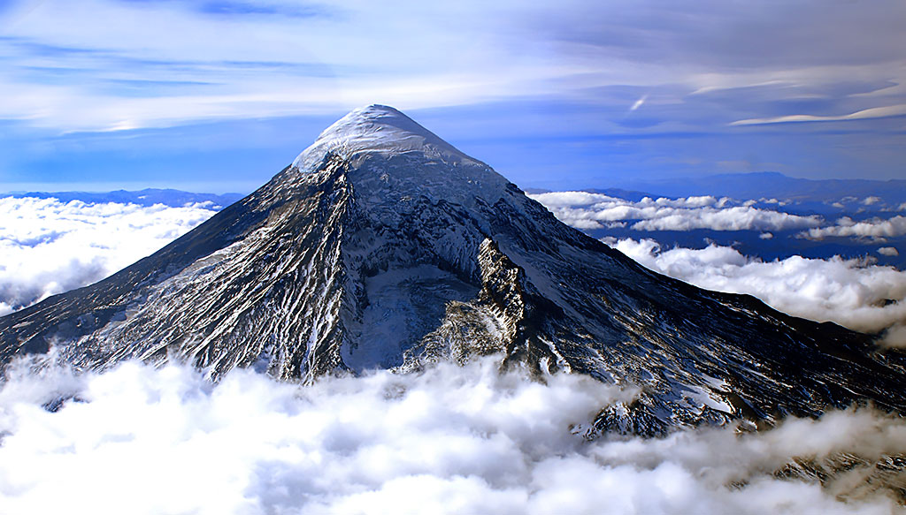
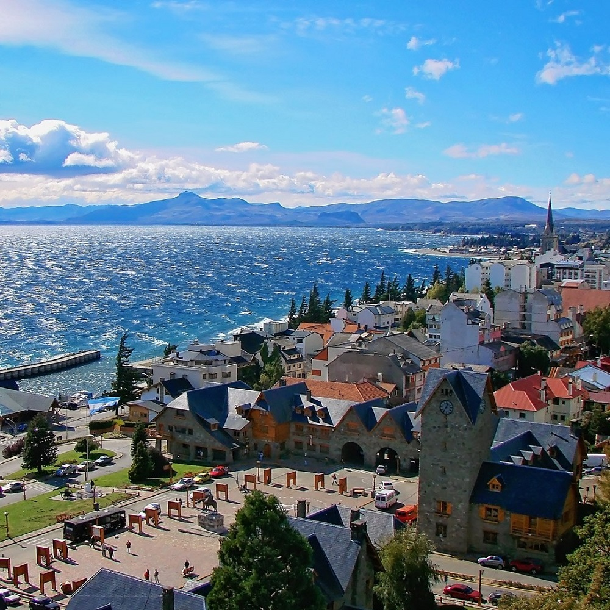
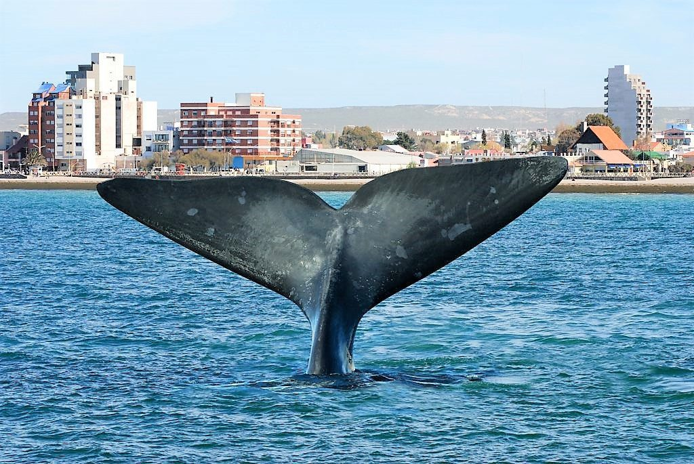

Sus paisajes combinan montañas, lagos, glaciares, bosques y extensas estepas, ofreciendo experiencias únicas para quienes buscan aventura, naturaleza y tranquilidad.
Neuquén
Entre sus destinos más visitados se encuentran San Martín de los Andes, Villa La Angostura y el Parque Nacional Lanín, ideales para disfrutar de la naturaleza y las actividades al aire libre.

Río Negro
Río Negro es conocida por su entorno natural y sus paisajes montañosos.
Algunos de sus destinos más populares son San Carlos de Bariloche, El Bolson y Las Grutas.

Chubut
Chubut es reconocida por su rica biodiversidad y sus paisajes costeros.
Algunos de sus destinos más destacados son Puerto Madryn, Trelew
y Peninsula Valdés.

Santa Cruz
Santa Cruz es conocida por su entorno natural y sus paisajes desérticos.
Algunos de sus destinos más populares son El Calafate, el Glaciar Perito Moreno
y El Chalten.

Tierra del Fuego
Tierra del Fuego es conocida por su entorno natural austral. Algunos de sus destinos
más populares son Ushuaia, el pintoresco pueblo de Tolhuin y Río Grande.